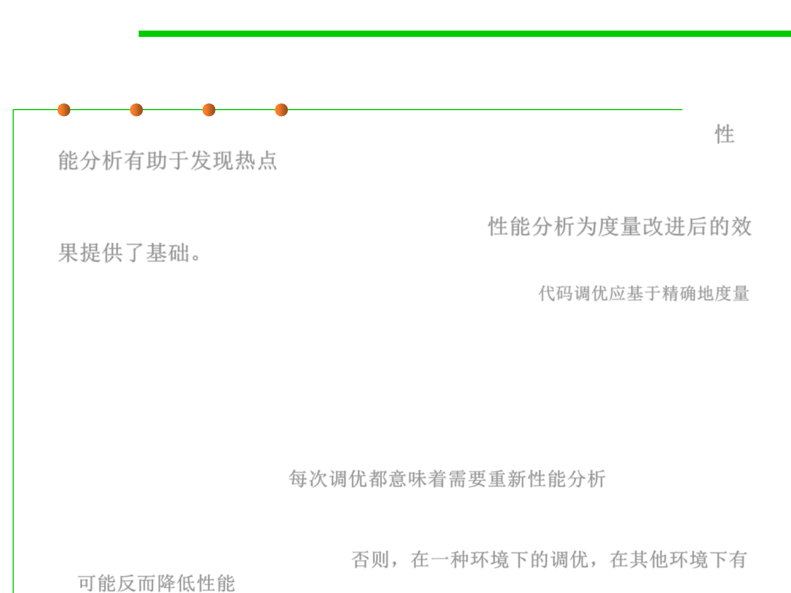

8.3 Code Tuning for Performance Optimization
(2) Tuning by Profiling and Measuring
▪ Profiling helps determine where code is spending time (hotspots)性
能分析有助于发现热点
▪ Profiling provides basis for measurement: determine whether
“improvement” really improved anything. 性能分析为度量改进后的效
果提供了基础。
▪ Code tuning is based on precise measurements. 代码调优应基于精确地度量
– You must always measure performance to know whether your changes
helped or hurt your program. The rules of the game change every time you
change languages, compilers, versions of compilers, libraries, versions of
libraries, processor, amount of memory on the machine.
– When you tune code, you’re implicitly signing up to re-profile each
optimization every time you change your compiler brand, compiler version,
library version, and so. 每次调优都意味着需要重新性能分析
– If you don’t reprofile, an optimization that improves performance under one
version of a compiler or library might well degrade performance when you
change the build environment. 否则，在一种环境下的调优，在其他环境下有
可能反而降低性能